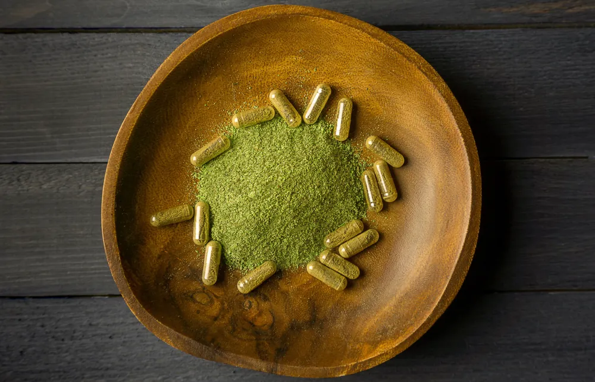
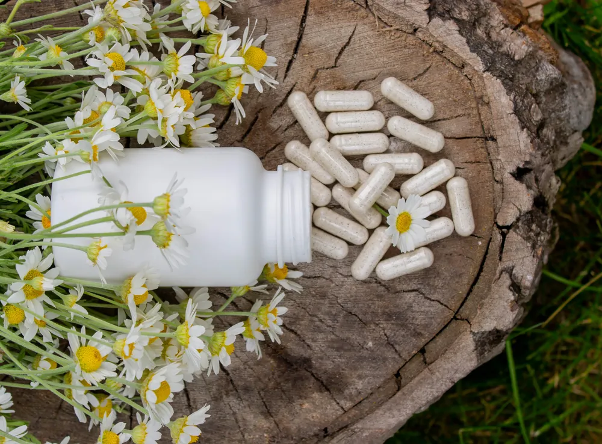

Let’s be honest — many of us have felt that heavy, sluggish feeling after a week of fast food, late nights, and way too much coffee. Our bodies are the most amazing things when it comes to keeping everything in balance, but now and again, we must give them a little boost. It is at this point that I began researching detoxification supplements, and to my amazement, they are not some flash in the pan.
These supplements provide a more gradual and nurturing way to help your body feel brighter, easier, and more energized rather than being dramatized as some might do a dramatic juice cleanse or one-day extreme cleanse. So how do they work?
Your Body Is Built to Detox — But It’s Under Pressure
The thing is that your liver and kidneys are equipped to deal with detoxing. They remove bad substances, digest and distribute them. They would do so in an ideal world. But we don’t live in a perfect world — we live in one filled with pollution, preservatives, medication, alcohol, and stress.
That’s where a detoxification supplement comes in. It doesn’t replace your liver or kidneys. It supports them. It adds nutrients and plant compounds your body requires to provide the detox process efficiently. A good comparison is right when you tune up your car, you call it tuning up, and that is what you are doing, just so the engine is working better.

What Ingredients Are in These Supplements?
A good quality detoxification supplement would tend to contain herbal matters such as milk thistle, turmeric, artichoke extract or dandelion root. These have different roles in enhancing the good performance of the liver and kidneys.
For example:
- The milk thistle is considered to promote the regeneration of liver cells
- Turmeric prevents inflammation
- Dandelion root can assist in enhancing urine production, which benefits the kidneys
- The antioxidants confer oxidative stress to the liver
It’s not about flushing your system with aggressive laxatives (which some products do). It’s about nourishing your system so it can do what it’s meant to — just more efficiently.
The Body Cleanse Confusion
When we think of the words body cleanse, most of us go straight to thinking about extreme detox plans – nothing but lemon water or green juices for weeks. What I am talking about isn’t that at all.
The real cleanse has nothing to do with starving the body. It’s all about helping your body detox the natural way. No, you don’t have to give up food & live in the bathroom for 3 days, etc. A detoxification supplement can work quietly in the background while you go on with your daily routine — especially when combined with better hydration, sleep, and whole foods.

But Do They Really Work?
I used to be sceptical, too. The supplement industry could be overwhelming, and face it, there are a lot of overpromises. However, after reading up on how liver-supporting ingredients work, and after experimenting with some of the products myself, I could feel the change.
In my case, it was not an overnight drama. It was gradual. My digestion improved. I felt less bloated. I had more energy in the mornings. That was enough to convince me these supplements have a place — especially when chosen carefully.
Why Malaysians Are Embracing the Trend
In Malaysia, I’ve noticed more people are becoming proactive with their health. We’re no longer waiting until something goes wrong — we’re looking for ways to stay ahead. With our lifestyle, food culture, and rising pollution, it makes sense that detox supplement Malaysia options are growing in demand.
Some are even taking things a step further by joining a holistic wellness retreat — a space to reset the mind and body, and learn how to take care of ourselves beyond just popping pills. The trend is clear: we want real, lasting health. Not quick fixes.
Then, the Question Is, Is It Worth Trying?
Do you feel tired, burnt out, weighed down or just not quite yourself? Perhaps your body has a message to tell you that it needs some downtime. An effective choice of detoxification supplement is not going to make your life much better in one night, but it will provide the required assistance to your organs so that they can work more efficiently.
So, when you are puzzled as to where to begin, we can tell you that one decision that is always safe to make is to choose a brand name, someone who does not just sell products but someone with knowledge of what cellular health is all about.
That’s where ZÉLL-V truly shines. We don’t just hand you a supplement and wish you luck — we offer personalised wellness solutions based on real science. If you’re serious about cleansing the right way and improving your long-term well-being, we highly encourage you to check out what we offer. Your body will thank you.
This article is for general information only and is not a substitute for professional medical advice. Please consult your doctor before starting any supplement, especially if you are pregnant, nursing, taking medication or have a medical condition.